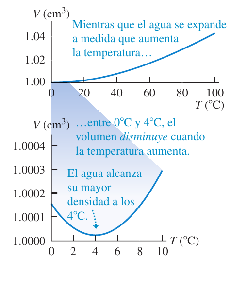
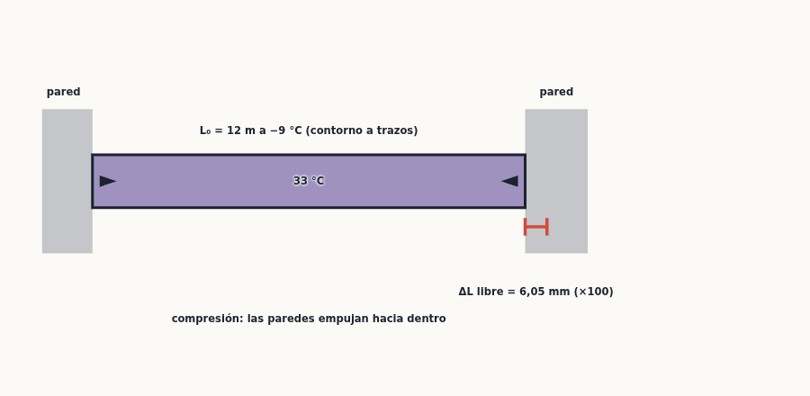
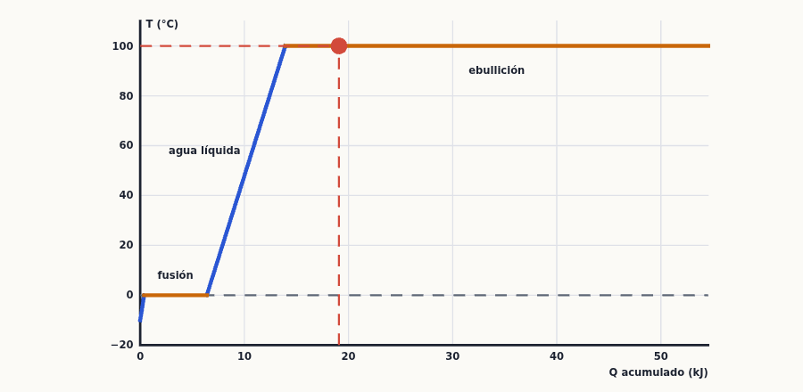

Temperatura y calor
Qué es la temperatura y cómo se mide, cuánto se dilatan los cuerpos al calentarse, cuánta energía hay que entregar para calentar o fundir algo (calor) y de qué tres maneras viaja el calor de un sitio a otro (conducción, convección y radiación). Es la puerta de entrada a la termodinámica y a la pregunta de teoría que ha caído en examen.
0Antes de empezar U p.546
Prerrequisitos: (1) trabajo, energía y potencia (temas 6-7): la energía se mide en julios y la potencia es energía por segundo, $1\ \text{W}=1\ \text{J/s}$; (2) esfuerzo y deformación (tema 11): el módulo de Young $Y=(F/A)/(\Delta l/l_0)$ aparecerá en el esfuerzo térmico; (3) proporcionalidad y despejar en ecuaciones, y un poco de derivadas ($dQ/dT$); (4) área de un círculo, de una esfera y volumen de una esfera para algunos problemas.
Mapa del tema (sigue el orden de U): 17.1 equilibrio térmico y ley cero; 17.2 termómetros y escalas (Celsius, Fahrenheit, Kelvin); 17.3 termómetro de gas y cero absoluto; 17.4 expansión térmica (lineal, de volumen, esfuerzo térmico); 17.5 cantidad de calor y calor específico ($Q=mc\Delta T$); 17.6 calorimetría y cambios de fase ($Q=\pm mL$); 17.7 mecanismos de transferencia de calor (conducción, convección, radiación). Después van los ejercicios resueltos, la chuleta y la lista de comprobación. En la pregunta de teoría del examen lo que cae es §17.7 (y, como cuestiones, aplicaciones de §17.4-17.7).
En las convocatorias catalogadas (2018-2025) el tema 17 ha salido tres veces como pregunta de teoría y siempre con el mismo título, «Mecanismos de transferencia de calor», acompañado de dos cuestiones cortas. No hay ningún problema numérico de examen de este tema en las convocatorias disponibles. De las tres teorías, solo el texto de Feb 2025 2ª sem. P-4 se puede leer; los PDF de Feb 2022 2ª y Feb 2024 2ª son escaneos sin texto extraíble y de ellos solo consta el resumen del índice (no se simulan ni se inventa su enunciado).
| Convocatoria y pregunta | Tema a desarrollar y cuestiones | Dónde en este resumen |
|---|---|---|
| Examen Febrero 2025 (2ª semana) P-4, Teoría Opción B | «Mecanismos de transferencia de calor» + (a) clavo en la patata al horno y (b) casa a temperatura constante | Resuelta completa en §8.1 (X1); teoría en §7 |
| Examen Febrero 2022 (2ª semana) P-3, Teoría Opción 3.2 | «Mecanismos de transferencia de calor» + humedad / calor percibido y bloques de metal y madera a igual temperatura (solo consta el resumen del índice; PDF sin texto) | La teoría es la misma (§7, X1); la idea del metal y la madera, en §7 (conducción) |
| Examen Febrero 2024 (2ª semana) P-4, Teoría Opción B | «Mecanismos de transferencia de calor» + tuberías congeladas / termómetro de mercurio y papel de aluminio en el horno (solo consta el resumen del índice; PDF sin texto) | La teoría es la misma (§7, X1); dilatación en §4 y radiación en §7 |
- Dibuja el sistema y decide qué intercambia energía. ¿Cambia la temperatura ($Q=mc\Delta T$), cambia de fase ($Q=\pm mL$, la temperatura no cambia), o hay un flujo continuo por conducción o radiación (potencia $H$ en W)?
- Signos: $\Delta T=T_f-T_i$; $Q>0$ entra calor al cuerpo, $Q<0$ sale. En un sistema aislado $\sum Q=0$.
- Si hay cambios de fase, comprueba el estado final: calcula el calor disponible hasta la temperatura de cambio y el necesario para completarlo antes de plantear $\sum Q=0$ con una $T$ desconocida.
- Dilatación: lineal $\Delta L=\alpha L_0\Delta T$; volumen $\Delta V=\beta V_0\Delta T$ ($\beta=3\alpha$); si no puede dilatarse, esfuerzo $F/A=-Y\alpha\Delta T$.
- Conducción: $H=kA(T_H-T_C)/L$; en capas en serie se suman las resistencias $R=L/k$ y la $H$ es la misma; en ramas paralelas se suman las $H$.
- Radiación: $H=Ae\sigma T^4$ con $T$ en kelvin; neta $H=Ae\sigma(T^4-T_s^4)$.
- Unidades: en $\Delta T$, $c$, $k$, $\alpha$ da igual °C o K (un intervalo es igual); en radiación y en los cocientes de presiones, siempre kelvin.
1Temperatura y equilibrio térmico U p.546-547
Todos tenemos la idea de «caliente» y «frío» por el tacto: la cuchara en el café te parece caliente y el cubito, frío. La temperatura es la magnitud física que cuantifica eso. Pero el tacto engaña (un trozo de metal y uno de madera a la misma temperatura no se sienten igual, lo verás en §7), así que necesitamos un termómetro: un objeto cuya propiedad (la altura del mercurio, la presión de un gas, la curvatura de una lámina) cambia con lo caliente que está. Lo importante es que si dos cuerpos en contacto no cambian más, están a la misma temperatura. Es como dos depósitos de agua conectados por un tubo: el agua fluye hasta que los niveles se igualan; con la energía térmica pasa algo parecido hasta que las temperaturas se igualan.
Cuando ponemos dos sistemas en contacto, la interacción entre ellos (flujo de calor, §17.5) hace que sus propiedades cambien hasta que dejan de cambiar: llamamos equilibrio térmico a ese estado. Un aislante ideal es un material que no permite la interacción térmica entre dos sistemas (ayuda a que se igualen despacio o no se igualen).
U p.546Si el sistema C (un termómetro) está en equilibrio térmico con A y con B, entonces A y B también están en equilibrio térmico entre sí. Y por tanto: dos sistemas están en equilibrio térmico si y solo si tienen la misma temperatura. Esto es lo que permite que un termómetro «mida» la temperatura de otro cuerpo.
U p.547Un termómetro de mercurio en la boca indica 37 °C cuando ya no sube: es entonces, y solo entonces, cuando la temperatura del mercurio (lo que lees) es la tuya. Si lo lees antes, estás leyendo la temperatura del mercurio, que aún no está en equilibrio contigo. Un termómetro mide su propia temperatura, y la ley cero asegura que coincide con la del cuerpo cuando hay equilibrio.
PDos láminas de metales distintos soldadas entre sí se dilatan de forma diferente al calentarse: la tira se curva más cuanto más caliente está. Así funcionan muchos termostatos (la curvatura abre o cierra un contacto eléctrico).
U p.547Confundir temperatura con calor. La temperatura es una propiedad del cuerpo (como la altura de un nivel); el calor es energía en tránsito entre cuerpos a distinta temperatura (como el caudal del agua entre los depósitos), §17.5.
P2Termómetros y escalas de temperatura U p.547-549
Una escala de temperatura es una regla: necesitas un cero y un tamaño de grado. La escala Celsius usa dos puntos fijos del agua a presión normal: 0 °C (se congela) y 100 °C (hierve), con 100 grados entre ellos. La Fahrenheit (EE. UU.) pone 32 °F y 212 °F en esos mismos puntos, con 180 grados en medio, así que su grado es más pequeño (5/9 del Celsius). La Kelvin tiene el mismo tamaño de grado que la Celsius pero el cero está desplazado al cero absoluto (§17.3).
$$T_F=\tfrac95T_C+32^\circ\quad(17.1)$$ $$T_C=\tfrac59(T_F-32^\circ)\quad(17.2)$$ $$T_K=T_C+273{,}15\quad(17.3)$$
Se lee «293 kelvins» (o «293 K»), nunca «grados kelvin».
U p.548-549
Algunos termómetros (como el de arteria temporal) no tocan el cuerpo: miden la radiación infrarroja que este emite (§7.3) y de ella deducen la temperatura.
U p.548«20 °C» es un valor (un punto de la escala); «10 C°» es un intervalo (una diferencia). Para valores se usan las ecuaciones con el $+32$ o el $+273{,}15$; para intervalos solo cuenta el tamaño del grado: $1\ \text{C}^\circ=1\ \text{K}=1{,}8\ \text{F}^\circ$. Un cambio de 10 C° es 10 K o 18 F° (no 50 °F). Por eso en $\Delta T$, $\alpha$, $c$ o $k$ se puede usar indistintamente °C o K.
U p.548-549Un trozo de hielo a 32,00 °F se convierte en agua a la temperatura corporal de 98,60 °F. Expresa ambas temperaturas en °C y en K y calcula $\Delta T$ en ambas escalas.
- Fahrenheit a Celsius con (17.2): $T_1=\tfrac59(32{,}00-32)=0{,}00$ °C; $T_2=\tfrac59(98{,}60-32)=37{,}00$ °C. Entonces $\Delta T=37{,}00$ C°.
- A kelvin con (17.3): $T_1=273{,}15$ K y $T_2=310{,}15$ K, luego $\Delta T=37{,}00$ K (el mismo número que en Celsius).
- En Fahrenheit, el intervalo es $\Delta T=98{,}60-32{,}00=66{,}60$ F° $=1{,}8\times37{,}00$.
3Termómetros de gas y la escala Kelvin U p.549-550
¿Y si queremos una escala que no dependa de un líquido concreto (el mercurio se dilata distinto que el alcohol)? Un gas diluido encerrado en un recipiente de volumen constante se comporta casi igual sea cual sea el gas: al calentarlo, su presión sube proporcionalmente. Si enfriamos y extrapolamos hasta que la presión sería cero, llegamos a una temperatura mínima: el cero absoluto. Esa presión nula es la forma de definir un cero que no depende de ninguna sustancia.
Se define el cociente de dos temperaturas Kelvin como el cociente de las presiones del termómetro de gas: $$\frac{T_2}{T_1}=\frac{p_2}{p_1}\qquad(17.4)$$ Para fijar el tamaño del grado se elige un estado de referencia, el punto triple del agua (coexisten hielo, agua y vapor; 0,01 °C y 610 Pa), al que por definición se asigna $T_\text{triple}=273{,}16$ K. Entonces: $$T=T_\text{triple}\,\frac{p}{p_\text{triple}}=(273{,}16\ \text{K})\,\frac{p}{p_\text{triple}}\qquad(17.5)$$ El cero absoluto es $T=0$ K $=-273{,}15$ °C, donde $p=0$ en (17.5).
U p.549-550Un termómetro de gas a volumen constante marca $p_\text{triple}=4{,}00\times10^4$ Pa en el punto triple. Si en un baño marca $p=5{,}00\times10^4$ Pa, ¿qué temperatura tiene el baño?
- (17.5): $T=(273{,}16\ \text{K})\dfrac{5{,}00\times10^4}{4{,}00\times10^4}=\mathbf{341{,}45\ K}$.
- En Celsius: $341{,}45-273{,}15=\mathbf{68{,}3}$ °C.
Usar °C en $T_2/T_1=p_2/p_1$ (el «cero» de Celsius no es el cero absoluto). Y creer que en el cero absoluto «todo movimiento molecular cesa»: ahí la energía es la mínima posible, pero por efectos cuánticos no es nula del todo.
U p.5504Expansión térmica U p.551-556
Cuando calientas un sólido, sus átomos vibran con más amplitud y, como la fuerza entre ellos no es simétrica, se separan algo más en promedio: el objeto se dilata. Es un efecto pequeño (una barra de acero de 12 m crece unos 6 mm al subir 42 grados), pero tan importante que los puentes llevan juntas, los rieles se tienden con huecos y los termómetros de mercurio funcionan por ello. La regla práctica: el cambio fraccionario de tamaño es proporcional al cambio de temperatura, con una constante propia de cada material.
Una dimensión lineal (longitud, diámetro, lado) que vale $L_0$ a la temperatura $T_0$ cambia, para un $\Delta T=T-T_0$ no muy grande, en $$\Delta L=\alpha\,L_0\,\Delta T\qquad(17.6)\qquad\Longleftrightarrow\qquad L=L_0\,(1+\alpha\,\Delta T)\qquad(17.7)$$ donde $\alpha$ es el coeficiente de expansión lineal (unidades K$^{-1}$ o (C°)$^{-1}$). Valores típicos (tabla 17.1): aluminio $2{,}4\times10^{-5}$; latón $2{,}0\times10^{-5}$; cobre $1{,}7\times10^{-5}$; acero $1{,}2\times10^{-5}$ K$^{-1}$; vidrio $0{,}4$ a $0{,}9\times10^{-5}$. Para un $\Delta T$ de 100 C° el cambio fraccionario $\Delta L/L_0$ es del orden de $1/1000$.
U p.551-552Una cinta métrica de acero mide exactamente 50,000 m a 20 °C (sus marcas están calibradas a esa temperatura). a) ¿Cuánto mide a 35 °C? b) A 35 °C el topógrafo lee 35,794 m en la cinta: ¿cuál es la distancia real?
- a) $\Delta T=35-20=15$ C°. (17.6): $\Delta L=\alpha L_0\Delta T=(1{,}2\times10^{-5})(50{,}000)(15)=9{,}0\times10^{-3}$ m $=9{,}0$ mm, y $L=50{,}000+0{,}009=\mathbf{50{,}009\ m}$.
- b) A 35 °C la cinta se ha estirado: cada «metro» de la cinta mide en realidad un poco más. La distancia real es mayor que la leída por el factor $L/L_0=1+\alpha\Delta T=1+1{,}8\times10^{-4}$: $(1+1{,}8\times10^{-4})(35{,}794)=\mathbf{35{,}800\ m}$.
- Evaluar. Los metales se dilatan poco con cambios moderados, pero esos 6 mm de diferencia pueden importar en un trabajo de precisión.
Para el volumen: $\Delta V=\beta\,V_0\,\Delta T$ (17.8), con $\beta$ el coeficiente de expansión volumétrica (tabla 17.2: mercurio $18\times10^{-5}$, etanol $75\times10^{-5}$ K$^{-1}$). En un sólido isótropo los tres lados crecen igual ($V_0=L_0^3$, $dV=3L_0^2\,dL=3\alpha V_0\,dT$), por lo que $$\beta=3\alpha\qquad(17.9)$$ (por ejemplo, el cobre: $3\times1{,}7\times10^{-5}=5{,}1\times10^{-5}$, el valor de la tabla 17.2).
U p.552-553Un agujero en una placa se agranda al calentarla, como si estuviera hecho del mismo material que la placa (no se encoge «porque haya más material alrededor»). Igual que una cavidad (el interior de un recipiente) cambia su volumen como el sólido correspondiente. Imagina que la placa es una fotografía que se amplía: también se amplía el agujero.
U p.552-553Un frasco de vidrio de 200 cm³ se llena hasta el borde con mercurio a 20 °C. ¿Cuánto mercurio se desborda al llevarlo a 100 °C? El coeficiente lineal del vidrio es $0{,}40\times10^{-5}$ K$^{-1}$.
- Idea. Se dilatan los dos: el mercurio y la cavidad del vidrio. Lo derramado es la diferencia de dilataciones.
- $\beta_\text{vidrio}=3\alpha=3(0{,}40\times10^{-5})=1{,}2\times10^{-5}$ K$^{-1}$ (17.9); $\beta_\text{Hg}=18\times10^{-5}$ K$^{-1}$ (tabla 17.2).
- $\Delta V_\text{Hg}-\Delta V_\text{vidrio}=V_0\Delta T(\beta_\text{Hg}-\beta_\text{vidrio})=(200\ \text{cm}^3)(80\ \text{C}^\circ)(18-1{,}2)\times10^{-5}=\mathbf{2{,}7\ cm^3}$.
- Evaluar. Es el funcionamiento de un termómetro de mercurio: el mercurio se dilata más que el vidrio y sube por el tubo. Y por eso agua caliente afloja la tapa metálica de un frasco de vidrio (el metal se dilata más).
Entre 0 y 4 °C el agua se contrae al calentarse (su $\beta$ es negativo); por encima de 4 °C se dilata. Por eso el agua tiene su mayor densidad a 4 °C, y también por eso el hielo (que se dilata al congelarse) flota y los lagos se congelan de arriba hacia abajo: el fondo sigue a 4 °C y la vida sobrevive.
U p.554
Si una barra de longitud $L_0$ y sección $A$ está sujeta y no puede dilatarse ni contraerse, aparece un esfuerzo. Se calcula como en el tema 11: (1) la barra «quiere» cambiar $(\Delta L/L_0)_\text{térmico}=\alpha\Delta T$; (2) la fuerza de las sujeciones produce una deformación igual y opuesta $(\Delta L/L_0)_\text{tensión}=F/(AY)$; (3) la suma es cero. Resultado: $$\boxed{\frac FA=-Y\,\alpha\,\Delta T}\qquad(17.12)$$ Si $\Delta T>0$ el esfuerzo es negativo (compresión); si $\Delta T<0$ es positivo (tracción). La longitud de la barra no interviene en el esfuerzo.
U p.554-555Un cilindro de aluminio de 10 cm de longitud y 20 cm² de sección se usa como espaciador entre dos paredes rígidas de acero. A 17,2 °C apenas se desliza entre ellas; si se calienta a 22,3 °C, ¿qué esfuerzo tiene y qué fuerza ejerce sobre cada pared? ($Y_\text{Al}=7{,}0\times10^{10}$ Pa, $\alpha_\text{Al}=2{,}4\times10^{-5}$ K$^{-1}$)
- $\Delta T=22{,}3-17{,}2=5{,}1$ C°.
- (17.12): $F/A=-Y\alpha\Delta T=-(7{,}0\times10^{10})(2{,}4\times10^{-5})(5{,}1)=\mathbf{-8{,}6\times10^{6}\ Pa}$ (compresión).
- $F=A\,(F/A)=(20\times10^{-4}\ \text{m}^2)(-8{,}6\times10^6\ \text{Pa})=\mathbf{-1{,}7\times10^4\ N}$ (unas 1,7 toneladas-fuerza).
- Evaluar. ¡Con solo 5 C°! Por eso los ingenieros prevén juntas de dilatación. (La longitud, 10 cm, no se usó.)

(1) Identifica si es lineal o de volumen. (2) Lista datos e incógnitas; $L_0$ y $\Delta L$ en las mismas unidades; $\alpha$ o $\beta$ en K$^{-1}$ con $\Delta T$ en K o °C. (3) Si te dan $T_0$ y un cambio dado de longitud o volumen, obtén $\Delta T$ y calcula $T=T_0+\Delta T$. (4) Un orificio o una cavidad se dilatan como el material. (5) Comprueba que el resultado es razonable (los cambios son del orden de $10^{-3}$).
U p.5535Cantidad de calor U p.556-559
Dejas una cuchara fría en un café caliente: la cuchara se calienta y el café se enfría hasta igualarse. Hay una transferencia de energía del café a la cuchara debida solo a la diferencia de temperaturas. A esa energía en tránsito la llamamos calor. Se puede subir la temperatura del agua agitándola (trabajo mecánico, como hizo Joule) o calentándola con una llama (calor): el efecto es el mismo, porque en ambos casos se está entregando energía. Y cuánto sube la temperatura depende de cuánta masa hay y de de qué material es: la misma llama calienta antes un vaso de aceite que uno de agua.
La transferencia de energía que se da exclusivamente por una diferencia de temperatura se llama flujo de calor (o transferencia de calor), y la energía así transferida se llama calor ($Q$, en J). Unidades: $1\ \text{cal}=4{,}186$ J; $1\ \text{kcal}=4186$ J; $1\ \text{Btu}=252\ \text{cal}=1055$ J. Una Caloría de los alimentos es una kcal.
U p.556No existe algo que pueda llamarse «la cantidad de calor de un cuerpo»: el calor es energía en tránsito, no una propiedad almacenada. Un cuerpo tiene temperatura y energía interna; calor es lo que pasa de un cuerpo a otro. Piensa en una cuenta bancaria: el saldo es la energía interna, el movimiento de dinero es el calor (y el trabajo).
U p.557La cantidad de calor necesaria para cambiar la temperatura de una masa $m$ en $\Delta T$ (sin cambio de fase) es $$Q=m\,c\,\Delta T\qquad(17.13)$$ con $c$ el calor específico del material [J/(kg·K)]. En forma diferencial: $dQ=mc\,dT$ (17.14) y $c=\dfrac1m\dfrac{dQ}{dT}$ (17.15). El agua tiene un calor específico muy alto, $c\approx4190$ J/(kg·K); el aluminio, 910; el cobre, 390; el hielo, 2100 (tabla 17.3). $Q>0$ si entra calor ($\Delta T>0$) y $Q<0$ si sale.
U p.557-559Un hombre de 80 kg con gripe tiene 39,0 °C en vez de 37,0 °C. Suponiendo que el cuerpo es agua en su mayor parte, ¿cuánto calor hizo falta?
- $\Delta T=39{,}0-37{,}0=2{,}0$ C° $=2{,}0$ K.
- (17.13): $Q=mc\Delta T=(80)(4190)(2{,}0)=\mathbf{6{,}7\times10^5\ J}$ $\approx160$ kcal.
- Evaluar. El calor específico real del cuerpo es unos 3480 J/(kg·K) (83 % del del agua, porque proteínas y grasas tienen menos): $Q=5{,}6\times10^5$ J $=133$ kcal. Si no fuera por los sistemas reguladores, los alimentos (miles de kcal) cambiarían mucho nuestra temperatura.
Si se usa el número de moles $n$ en lugar de la masa ($m=nM$, 17.16), $Q=nMc\Delta T$ (17.17) $=nC\Delta T$ (17.18), con la capacidad calorífica molar $C=Mc$ (17.19) [J/(mol·K)]. Para los sólidos elementales, $C\approx25$ J/(mol·K) (regla de Dulong y Petit): el aluminio da 24,6; el cobre, 24,8; el hierro, 26,3 (tabla 17.3). La explicación se verá en el tema 18: cada átomo aporta la misma energía por grado.
U p.558-559Un elemento de circuito de 23 mg de silicio recibe energía de la corriente a razón de $7{,}4\ \text{mW}=7{,}4\times10^{-3}$ J/s. Si no se elimina calor, ¿con qué rapidez sube su temperatura? ($c_\text{Si}=705$ J/(kg·K))
- La energía entra como un calor $dQ/dt=7{,}4\times10^{-3}$ J/s. De (17.14), $dQ=mc\,dT$; dividiendo entre $dt$: $\dfrac{dT}{dt}=\dfrac{dQ/dt}{mc}$.
- $\dfrac{dT}{dt}=\dfrac{7{,}4\times10^{-3}}{(23\times10^{-6})(705)}=\mathbf{0{,}46\ K/s}$ (unos 27 K/min).
- Evaluar. A ese ritmo el elemento se autodestruiría pronto: la evacuación de calor es clave en el diseño electrónico.
Para comparar «quién se calienta más rápido» con el mismo calor y masa, mira el calor específico: $\Delta T=Q/(mc)$; a menor $c$ (metales), mayor $\Delta T$. El agua tiene un $c$ enorme: por eso modera el clima junto al mar y por eso se usa como refrigerante.
6Calorimetría y cambios de fase U p.559-564
Pon una olla de hielo al fuego: primero el hielo se calienta, luego empieza a fundirse y la temperatura se queda clavada en 0 °C mientras siga habiendo hielo, aunque el fuego siga entregando calor; solo cuando se ha fundido todo, el agua se calienta; y al hervir, otra parada en 100 °C. ¿A dónde va la energía en las paradas? Se emplea en romper las uniones entre moléculas (pasar de sólido a líquido o de líquido a gas), no en moverlas más deprisa. Por eso un cambio de fase necesita una cantidad de calor propia de cada sustancia, y la temperatura no cambia mientras dura.
Para convertir una masa $m$ de una fase en otra, a la temperatura de cambio de fase, $$Q=\pm\,m\,L\qquad(17.20)$$ con $+$ si el calor entra al material (fusión, vaporización) y $-$ si sale (congelación, condensación). $L_f$ es el calor de fusión y $L_v$ el calor de vaporización [J/kg]. Para el agua a presión atmosférica: $L_f=3{,}34\times10^5$ J/kg (0 °C) y $L_v=2{,}256\times10^6$ J/kg (100 °C) (tabla 17.4). Vaporizar cuesta unas 7 veces más que fundir. Otros valores de la tabla 17.4: plomo $L_f=24{,}5\times10^3$ J/kg (fusión a 327,3 °C); hidrógeno $L_f=58{,}6\times10^3$ J/kg (fusión a 13,84 K).
U p.560-561
La sublimación (sólido a gas sin pasar por líquido: el hielo seco, la naftalina), el sobreenfriamiento (agua líquida por debajo de 0 °C si no hay dónde empezar a congelarse) y el enfriamiento por evaporación (el sudor se lleva calor al evaporarse) son manifestaciones de lo mismo: las fases son estados de equilibrio y pasar de una a otra exige o libera energía $mL$.
U p.562En un sistema aislado (sin intercambio con el exterior) la suma algebraica de los calores de todos los cuerpos es cero: $\sum Q=0$. Cada cuerpo aporta $mc\Delta T$ (si cambia $T$) o $\pm mL$ (si cambia de fase), con su signo. Un calorímetro es justamente un recipiente aislado en el que se mezclan cuerpos para medir calores específicos o de fusión.
U p.563Un campista vierte 0,300 kg de café (a 70,0 °C, con el calor específico del agua) en una taza de aluminio de 0,120 kg a 20,0 °C. ¿Cuál es la temperatura de equilibrio? Sin intercambio con el exterior.
- $Q_\text{café}+Q_\text{Al}=0$ con $Q=mc(T-T_0)$ en cada uno (el café pierde, la taza gana): $m_Cc_W(T-70{,}0)+m_{Al}c_{Al}(T-20{,}0)=0$.
- Despejando: $T=\dfrac{m_Cc_WT_{0C}+m_{Al}c_{Al}T_{0Al}}{m_Cc_W+m_{Al}c_{Al}}=\dfrac{(0{,}300)(4190)(70)+(0{,}120)(910)(20)}{(0{,}300)(4190)+(0{,}120)(910)}=\mathbf{66{,}0\ °C}$.
- Evaluar. $T$ queda cerca de la temperatura del café: tiene 2,5 veces la masa y un calor específico 4,6 veces mayor. Con $T=66{,}0$ °C: $Q_C=-5{,}0\times10^3$ J y $Q_{Al}=+5{,}0\times10^3$ J, como debe ser.
Un vaso contiene 0,25 kg de cola (como agua) a 25 °C. ¿Cuánto hielo, a $-20$ °C, hay que añadir para que la temperatura final sea 0 °C con todo el hielo fundido? Desprecia la capacidad del vidrio.
- La cola solo se enfría: $Q_C=m_Cc_W(0-25)<0$. El hielo se calienta de $-20$ a 0 °C ($Q_I=m_Ic_I(0+20)$) y además se funde ($Q_2=m_IL_f$).
- $Q_C+Q_I+Q_2=0\Rightarrow m_I\,[\,c_I(20)+L_f\,]=m_Cc_W(25)$, y $m_I=\dfrac{(0{,}25)(4190)(25)}{(2100)(20)+3{,}34\times10^5}=\dfrac{26\,188}{376\,000}=\mathbf{0{,}070\ kg=70\ g}$.
- Evaluar. Tres o cuatro cubitos medianos para 250 g de bebida: razonable.
Una olla gruesa de cobre de 2,0 kg está a 150 °C. Vierte 0,10 kg de agua a 25 °C y tapa la olla. ¿Temperatura final y fase del agua? Sin pérdidas.
- Tres finales posibles: (1) nada hierve y $T<100$ °C; (2) parte hierve y $T=100$ °C (mezcla agua-vapor); (3) todo hierve y $T\ge100$ °C.
- Caso 1 (supongamos que nada hierve): $T=\dfrac{(0{,}10)(4190)(25)+(2{,}0)(390)(150)}{(0{,}10)(4190)+(2{,}0)(390)}=106$ °C. Pero eso pasa de 100 °C: contradice la hipótesis, así que algo hierve.
- Caso 2 ($T=100$ °C; hierve una fracción $x$ del agua): $m_Wc_W(100-25)+x\,m_WL_v+m_{Cu}c_{Cu}(100-150)=0\Rightarrow x=\dfrac{(2{,}0)(390)(50)-(0{,}10)(4190)(75)}{(0{,}10)(2{,}256\times10^6)}=\dfrac{39\,000-31\,425}{225\,600}=\mathbf{0{,}034}$.
- Conclusión: $T=100$ °C y se evaporan $0{,}034\times0{,}10$ kg $=3{,}4$ g; el resto, líquido.
En una estufa portátil, el 30 % de la energía de combustión calienta el agua. Si se calienta 1,00 kg de agua de 20 a 100 °C y se evaporan 0,25 kg, ¿cuánta gasolina se quema? (1 g de gasolina libera 46 000 J.)
- Calentar: $Q_1=(1{,}00)(4190)(80)=3{,}35\times10^5$ J. Evaporar: $Q_2=mL_v=(0{,}25)(2{,}256\times10^6)=5{,}64\times10^5$ J. Total: $8{,}99\times10^5$ J.
- Solo el 30 % llega al agua: energía de combustión $=8{,}99\times10^5/0{,}30=3{,}00\times10^6$ J.
- Gasolina: $3{,}00\times10^6/46\,000=\mathbf{65\ g}$ (unos 0,09 L).

(1) Usa $\sum Q=0$; cada cuerpo con su $Q=mc\Delta T$ y, si cambia de fase, su $\pm mL$. (2) Antes de resolver, calcula qué puede pasar: ¿el calor liberado al enfriar un cuerpo hasta la temperatura de cambio de fase basta para completar el cambio del otro? (3) Si no, la temperatura final es la de cambio de fase y la incógnita es la masa que cambia. (4) Si hay duda, supón un estado final, resuelve y comprueba (ejemplo 17.9).
U p.563Usar el $c$ del agua para el hielo (son distintos: 4190 y 2100); olvidar el $mL$ al pasar por 0 °C o 100 °C; poner los signos al revés ($Q$ del cuerpo caliente es negativo); no comprobar que el estado final supuesto es coherente.
P7Mecanismos de transferencia de calor U p.565-571
El calor sale del café caliente de tres maneras a la vez: por el contacto con la taza (los átomos de la taza que están calientes empujan a sus vecinos y se pasan la energía: conducción); por el aire que se mueve y se lleva el calor consigo (la columna de aire caliente que sube: convección); y porque todo cuerpo caliente emite luz infrarroja (radiación, la única que no necesita nada entre medias, como el calor del Sol). Las tres llevan energía de lo caliente a lo frío; se describen con ecuaciones distintas.
Conducción: transferencia dentro de un cuerpo, o entre cuerpos en contacto, sin desplazamiento de materia (los átomos transmiten la energía; en los metales, además, los electrones libres). Convección: transferencia por el movimiento de una masa de fluido de una región a otra. Radiación: transferencia por ondas electromagnéticas (infrarrojo, luz visible, ultravioleta); no necesita medio material. La rapidez de transferencia es la corriente de calor $H=dQ/dt$, en watts.
U p.5657.1 Conducción
Para una varilla de sección $A$ y longitud $L$, con costados aislados y extremos a $T_H>T_C$ (estado estable): $$\boxed{H=\frac{dQ}{dt}=kA\,\frac{T_H-T_C}{L}}\qquad(17.21)$$ $H$ es proporcional al área y a la diferencia de temperatura, e inversamente proporcional a la longitud (fig. 17.24). $(T_H-T_C)/L$ es el gradiente de temperatura; $k$ es la conductividad térmica del material [W/(m·K)]: grande en los buenos conductores y pequeña en los aislantes. En forma local, $H=-kA\,dT/dx$ (17.22): el signo menos dice que el calor fluye hacia las temperaturas decrecientes.
U p.565-566
| Material | $k$ [W/(m·K)] | Material | $k$ [W/(m·K)] |
|---|---|---|---|
| Cobre | 385 | Vidrio | 0,8 |
| Aluminio | 205 | Madera | 0,12–0,04 |
| Latón | 109 | Espuma de poliestireno | 0,027 |
| Acero | 50,2 | Aire | 0,024 |
| Hielo | 1,6 | ||
Toca un trozo de metal y uno de madera que están a 20 °C: el metal te parece más frío. No lo está: lo que tu mano nota es la corriente de calor $H$, no la temperatura, y con su $k$ muy grande el metal extrae calor de tu piel mucho más deprisa que la madera. Por eso el metal a 20 °C «se siente frío» y a 200 °C, quema. Los buenos aislantes (lana, poliestireno, fibra de vidrio, plumas) lo son sobre todo porque atrapan aire inmóvil, de $k$ muy pequeña.
U p.565-566Una hielera de poliestireno tiene 0,80 m² de pared (con tapa) y 2,0 cm de espesor, llena de hielo, agua y latas a 0 °C. Con la pared exterior a 30 °C, ¿qué corriente de calor entra y cuánto hielo se derrite en 3 h?
- (17.21) con $k=0{,}027$ W/(m·K): $H=kA\dfrac{T_H-T_C}L=(0{,}027)(0{,}80)\dfrac{30{,}0}{0{,}020}=\mathbf{32{,}4\ W}$.
- $Q=Ht=(32{,}4)(10\,800\ \text{s})=3{,}5\times10^5$ J, y con (17.20): $m=Q/L_f=\dfrac{3{,}5\times10^5}{3{,}34\times10^5}=\mathbf{1{,}0\ kg}$.
- Evaluar. La corriente es baja gracias a la baja conductividad del poliestireno.
Se puede escribir (17.21) como $H=A\,(T_H-T_C)/R$ (17.23) con la resistencia térmica $R=L/k$ (17.24) [m²·K/W] de una capa de espesor $L$. Dos reglas (Estrategia 17.3):
- Capas (o barras) en serie: por todas pasa la misma $H$ (nada se acumula) y las resistencias se suman: $R=R_1+R_2+\dots$; la caída de temperatura en cada capa es proporcional a su $R$ (más caída donde más resistencia).
- Ramas en paralelo (mismos extremos): cada rama tiene su propia $H=kA\Delta T/L$ y las corrientes se suman. En una unión, $\sum H_\text{entra}=\sum H_\text{sale}$.
Una barra de acero de 10,0 cm y una de cobre de 20,0 cm, ambas de sección cuadrada de 2,00 cm de lado, se sueldan extremo con extremo. El extremo del acero está a 100 °C y el del cobre a 0 °C. a) Temperatura de la unión y corriente total. b) Si en vez de soldarlas se separan y cada una tiene un extremo a 100 °C y el otro a 0 °C, ¿corriente total?
- a) Serie. Misma $H$: $\dfrac{k_SA(T_H-T)}{L_S}=\dfrac{k_{Cu}A(T-T_C)}{L_{Cu}}$; el área se cancela y $T=\dfrac{(k_S/L_S)T_H+(k_{Cu}/L_{Cu})T_C}{k_S/L_S+k_{Cu}/L_{Cu}}=\dfrac{(502)(100)+(1925)(0)}{502+1925}=\mathbf{20{,}7\ °C}$.
- Corriente: $H=\dfrac{(50{,}2)(4{,}00\times10^{-4})(100-20{,}7)}{0{,}100}=\mathbf{15{,}9\ W}$ (la misma por el cobre).
- b) Paralelo. Cada barra con $\Delta T=100$ K: $H_S=\dfrac{(50{,}2)(4{,}00\times10^{-4})(100)}{0{,}100}=20{,}1$ W y $H_{Cu}=\dfrac{(385)(4{,}00\times10^{-4})(100)}{0{,}200}=77{,}0$ W; total $\mathbf{97{,}1\ W}$.
- Evaluar. En paralelo la corriente es mucho mayor: más sección total y un gradiente completo en cada barra.
7.2 Convección
Es la transferencia de calor por movimiento de una masa de fluido de una región a otra. Si el fluido lo mueve un ventilador o una bomba, es convección forzada (calefacción por aire, refrigeración del motor, la sangre bombeada por el corazón, principal transporte de calor dentro del cuerpo); si el movimiento se debe a diferencias de densidad causadas por la dilatación térmica (el aire caliente, menos denso, sube), es convección natural o libre. No existe una ecuación sencilla; hechos experimentales: la corriente de calor es proporcional al área de la superficie y aproximadamente a la potencia $5/4$ de la diferencia de temperatura. Cerca de una pared se forma una película de fluido casi inmóvil que aísla; la convección forzada la adelgaza (el viento enfría más).
U p.568La convección en la atmósfera es el motor del clima, la de los océanos transporta calor por todo el planeta, y los planeadores y los halcones suben aprovechando las corrientes térmicas que se elevan del suelo caliente.
U p.5687.3 Radiación
Todo cuerpo emite ondas electromagnéticas por estar a una temperatura $T$. La corriente de calor radiada por una superficie de área $A$ es $$\boxed{H=A\,e\,\sigma\,T^4}\qquad(17.25)\qquad\sigma=5{,}67\times10^{-8}\ \text{W/(m}^2\text{·K}^4\text{)}$$ con $T$ en kelvin y $e$ la emisividad (entre 0 y 1; mayor en superficies oscuras y mates). El cuerpo también absorbe la radiación del entorno a temperatura $T_s$, así que la corriente neta es $$H_\text{neta}=A\,e\,\sigma\,(T^4-T_s^4)\qquad(17.26)$$ ($H_\text{neta}>0$ significa que el cuerpo pierde calor). En equilibrio, $T=T_s$ y no hay transferencia neta.
U p.569-570Una placa de acero cuadrada de 10 cm de lado se calienta a 800 °C en una forja. Su emisividad es 0,60. ¿Qué potencia emite por radiación?
- Tiene dos caras: $A=2(0{,}10)^2=0{,}020$ m². $T=800+273=1073$ K.
- (17.25): $H=Ae\sigma T^4=(0{,}020)(0{,}60)(5{,}67\times10^{-8})(1073)^4=\mathbf{900\ W}$.
- Evaluar. Un herrero cerca la nota fácilmente.
Superficie del cuerpo 1,20 m² a 30 °C (303 K), emisividad $e\approx1$. a) ¿Cuánto radia? b) Si el entorno está a 20 °C (293 K), ¿qué pérdida neta?
- a) $H=Ae\sigma T^4=(1{,}20)(1)(5{,}67\times10^{-8})(303)^4=\mathbf{574\ W}$.
- b) (17.26): $H_\text{neta}=(1{,}20)(5{,}67\times10^{-8})\,[(303)^4-(293)^4]=\mathbf{72\ W}$: el entorno devuelve casi toda la radiación.
Una superficie que absorbe bien la radiación también la emite bien ($e$ alta); un radiador ideal ($e=1$) es el cuerpo negro; un reflector ideal casi no emite. De ahí el termo (frasco Dewar): doble pared de vidrio con vacío entre ellas (elimina conducción y convección) y plateada (refleja la radiación y emite poco). Y el efecto invernadero: la Tierra absorbe radiación solar y emite al espacio en infrarrojo; el CO$_2$ y otros gases absorben parte de ese infrarrojo y lo reemiten hacia abajo, elevando la temperatura media unos 33 °C. Los bebés prematuros en incubadora pueden enfriarse por radiación hacia paredes frías aunque el aire esté templado.
U p.570-571(1) Usar °C en $T^4$ (siempre kelvin). (2) Creer que la radiación necesita aire: viaja por el vacío. (3) Doblar la temperatura en °C y esperar $2^4=16$ veces más (solo vale para el doble de la temperatura en kelvin). (4) Olvidar restar la absorción del entorno cuando piden la pérdida neta.
P7.4 Cuadro resumen
| Mecanismo | ¿Qué transporta la energía? | ¿Necesita medio? | Ley | Depende de |
|---|---|---|---|---|
| Conducción | choques entre partículas y electrones libres; no hay desplazamiento de materia | sí (sólido o fluido en reposo) | $H=kA\,\Delta T/L$ | $k$, $A$, $\Delta T$, $1/L$ |
| Convección | el propio fluido en movimiento | sí (fluido) | empírica, $\propto A\,\Delta T^{5/4}$ | área, movimiento del fluido |
| Radiación | ondas electromagnéticas | no | $H=Ae\sigma T^4$; neta $Ae\sigma(T^4-T_s^4)$ | $T^4$ (K), $e$, $A$ |
En la práctica actúan a la vez (una olla: radiación y conducción desde el fuego, conducción por el fondo, convección en el agua). En estado estable, si el calor pasa en serie por varios mecanismos, la corriente $H$ es la misma en todos: es el truco del problema práctico de U (E24).
8Ejercicios resueltos
Primero, la pregunta de teoría de examen real (Febrero 2025, 2ª semana, P-4) con sus dos cuestiones cortas. Después, los problemas del libro (E), traducidos y ampliados, de los más sencillos a los más difíciles y agrupados por secciones, terminando con el problema práctico de U. Hay que decirlo claro: no hay ningún problema numérico de examen de este tema en las convocatorias disponibles (solo teoría); los problemas del libro sirven para dominar las ecuaciones que se piden en esa teoría y en las cuestiones. Pulsa «Mostrar soluciones» arriba para abrirlos todos de una vez. Cada ejercicio termina con una receta reutilizable y, casi siempre, con el error típico. Datos de U: $c_\text{agua}=4190$, $c_\text{hielo}=2100$, $c_\text{Al}=910$, $c_\text{Cu}=390$ J/(kg·K); $L_f=3{,}34\times10^5$ y $L_v=2{,}256\times10^6$ J/kg; $\sigma=5{,}67\times10^{-8}$ W/(m²·K⁴).
8.1 Ejercicio de examen real (X)
X1 — Teoría: «Mecanismos de transferencia de calor» + dos cuestiones X U p.556, 565-571
Examen Febrero 2025 (2ª semana), P-4, Teoría Opción B (4 puntos). Desarrolle el tema: Mecanismos de transferencia de calor. Además, responda a las siguientes cuestiones: (a) Para hornear una patata en menos tiempo ésta se atraviesa con un clavo grande. ¿Por qué? ¿Sería mejor usar un clavo de aluminio o uno de acero? ¿Por qué? (b) Cuando hay escasez de energía, algunos medios recomiendan mantener las casas a temperatura constante día y noche para ahorrar combustible. El argumento es que, al apagar la calefacción de noche, las paredes, los techos y otras áreas se enfrían y deberán volver a calentarse a la mañana siguiente. Así, al mantener la temperatura constante, esas partes de la casa no se enfriarán y no tendrán que volver a calentarse. ¿Tiene sentido este argumento? ¿Realmente se ahorrará energía siguiendo ese consejo?
Desarrollo modelo del tema (en negrita lo que no puede faltar)
- Qué es el calor. Calor es la energía que se transfiere exclusivamente por una diferencia de temperatura; fluye espontáneamente del cuerpo más caliente al más frío hasta que se alcanza el equilibrio térmico (misma temperatura, ley cero). Un cuerpo no contiene calor: tiene temperatura y energía interna; el calor es energía en tránsito. La rapidez de transferencia es la corriente de calor $H=dQ/dt$, en watts. Hay tres mecanismos: conducción, convección y radiación.
- Conducción. Idea: dentro de un cuerpo, o entre cuerpos en contacto, los átomos de la zona caliente (más energía cinética media) empujan a sus vecinos y les pasan energía; la materia no se desplaza, la energía sí. En los metales, además, los electrones libres la llevan muy deprisa (por eso son buenos conductores). Ley (experimental), para sección $A$, longitud $L$ y extremos a $T_H>T_C$ en estado estable: $$H=\frac{dQ}{dt}=kA\,\frac{T_H-T_C}{L}\qquad(17.21)$$ proporcional al área y a la diferencia de temperatura e inversamente proporcional al espesor; $k$ es la conductividad térmica (cobre 385, aluminio 205, acero 50,2, vidrio 0,8, poliestireno 0,027, aire 0,024 W/(m·K)). Forma local: $H=-kA\,dT/dx$ (el calor va hacia temperaturas decrecientes). Resistencia térmica $R=L/k$, $H=A\Delta T/R$: en serie se suman las $R$ (misma $H$); en paralelo se suman las $H$. Los buenos aislantes son sobre todo aire inmóvil. Un metal «se siente frío» porque, con su $k$ grande, extrae calor de la mano muy deprisa: el tacto mide $H$, no $T$.
- Convección. Idea: transferencia por el movimiento de una masa de fluido: el fluido caliente lleva su energía consigo. Natural: el movimiento lo causan las diferencias de densidad (el aire caliente, menos denso, sube); forzada: un ventilador o una bomba (calefacción por aire, refrigeración del motor, sangre bombeada por el corazón). No hay una ecuación sencilla; hechos experimentales: $H$ es proporcional al área (radiadores y aletas con mucha superficie), cerca de una pared hay una película de fluido casi inmóvil que aísla y que la convección forzada adelgaza (efecto del viento frío), y $H$ es aproximadamente proporcional a $(\Delta T)^{5/4}$. A gran escala gobierna el clima.
- Radiación. Idea: energía transportada por ondas electromagnéticas (infrarrojo, visible, ultravioleta); no necesita medio material (así nos llega el calor del Sol). Todo cuerpo emite; a 20 °C casi todo en infrarrojo, a 800 °C ya brilla en rojo. Ley de Stefan-Boltzmann $$H=Ae\sigma T^4\qquad(17.25),\qquad\sigma=5{,}67\times10^{-8}\ \text{W/(m}^2\text{·K}^4\text{)}$$ con $T$ absoluta (kelvin) y $e$ la emisividad (0 a 1). El cuerpo también absorbe la radiación del entorno a $T_s$, de modo que la corriente neta es $H_\text{neta}=Ae\sigma(T^4-T_s^4)$ (17.26). Buen absorbedor = buen emisor; $e=1$ es el cuerpo negro; un reflector ideal es mal emisor (termo plateado con vacío). Aplicaciones: incubadoras, efecto invernadero (el CO$_2$ absorbe y reemite infrarrojo y eleva la temperatura media unos 33 °C). Ejemplo: el cuerpo humano (1,20 m², 303 K, entorno a 293 K) emite 574 W pero pierde solo 72 W netos.
- Cuadro resumen para la cuartilla: conducción ($H=kA\Delta T/L$, necesita medio, sin movimiento de materia); convección (empírica, $\propto A\Delta T^{5/4}$, fluido en movimiento); radiación ($H=Ae\sigma T^4$, no necesita medio) (tabla de §7.4).
- Cierre: en la práctica actúan a la vez. En estado estable, si el calor pasa en serie por varios mecanismos o capas, la corriente $H$ es la misma en todos (problema práctico de U, E24).
Figuras para la cuartilla (están en §7): (a) varilla con $T_H$, $T_C$, $A$, $L$ y la flecha de $H$; (b) celda de convección (el fluido sube caliente y baja frío); (c) cuerpo que emite $Ae\sigma T^4$ y absorbe $Ae\sigma T_s^4$.
Cuestión (a): el clavo en la patata
- Por qué tarda la patata. En el horno, el aire y las paredes calientan la superficie de la patata (convección y radiación); hacia el centro el calor solo llega por conducción a través de la propia patata, casi toda agua y almidón, de conductividad muy baja (orden de 0,6 W/(m·K), como el agua). Con (17.21), $k$ pequeña $\Rightarrow$ el interior tarda mucho.
- Qué hace el clavo. Es metálico, con $k$ cientos de veces mayor; su cabeza y la parte que sobresale están a la temperatura del horno y conducen calor directamente al centro: la patata se calienta desde dentro y desde fuera a la vez. Es un «atajo» de baja resistencia térmica ($R=L/k$ pequeña).
- ¿Aluminio o acero? Mejor aluminio: $k_{Al}=205$ W/(m·K) frente a $k_{acero}=50{,}2$ W/(m·K). Con la misma geometría y la misma diferencia de temperatura, $H\propto k$: el clavo de aluminio conduce unas 4,1 veces más calor ($205/50{,}2=4{,}08$). Orden de magnitud (estimación propia): clavo de 4 mm de diámetro, 5 cm de recorrido y 100 K de diferencia $\Rightarrow$ $H_{Al}\approx5{,}2$ W y $H_{acero}\approx1{,}3$ W.
Cuestión (b): ¿mantener la casa a temperatura constante ahorra combustible?
- Qué se gasta. La calefacción solo tiene que reponer el calor que se escapa al exterior por paredes, techos y ventanas (sobre todo por conducción). Si al cabo de 24 h la casa vuelve al mismo estado, la energía que guardan las paredes es la misma al principio y al final: el combustible de un día es el calor total perdido hacia fuera en ese día.
- De qué depende la pérdida. Por (17.23), $H=A\,(T_{int}-T_{ext})/R$: la pérdida es proporcional a la diferencia de temperatura entre dentro y fuera.
- Con la calefacción apagada de noche la casa se enfría, $T_{int}-T_{ext}$ es menor y se pierde menos calor durante esas horas. Es cierto que por la mañana hay que recalentar paredes y techos, pero esa energía es exactamente la que esas partes cedieron por la noche, y ya está contada en la pérdida (más pequeña) de la noche. En total se pierde menos $\Rightarrow$ se gasta menos combustible.
- Conclusión: el argumento no tiene sentido; bajar la calefacción de noche ahorra energía. Mantener la temperatura constante es lo que más gasta, porque mantiene la máxima diferencia con el exterior todo el tiempo.
- Ejemplo numérico (propio, modelo simplificado): casa con $A/R=200$ W/K y exterior a 0 °C. A 20 °C constante: $200\cdot20\cdot24=96$ kWh/día. Si durante 8 h la temperatura interior baja a 12 °C: $200\,(20\cdot16+12\cdot8)=83{,}2$ kWh $\Rightarrow$ ahorro del 13 %.
(1) Decir que el cuerpo «tiene» calor. (2) Usar °C en Stefan-Boltzmann. (3) Decir que la radiación necesita aire. (4) En (b), olvidar que lo que se paga es lo que se pierde hacia fuera y que la pérdida depende de $T_{int}-T_{ext}$. (5) En (a), justificar el aluminio por «calentarse antes» en lugar de por su mayor $k$.
Febrero 2022 (2ª semana, P-3) y Febrero 2024 (2ª semana, P-4) también piden «Mecanismos de transferencia de calor» (solo consta el resumen del índice; no se transcribe su enunciado). La respuesta de teoría es la misma. Como práctica de cuestiones cortas parecidas, aquí tienes cuatro Preguntas para análisis de U (no son enunciados de examen):
- P17.4 (tuberías congeladas, termómetro de mercurio). El agua se dilata al congelarse (§4): el hielo ocupa más volumen y revienta la tubería. El mercurio, como casi todas las sustancias, se contrae al solidificarse, así que un termómetro de mercurio no se rompe por esa causa al bajar del punto de congelación del mercurio.
- P17.12 (día húmedo y caluroso). El sudor nos enfría al evaporarse ($Q=mL_v$ lo toma de la piel, §6); con aire muy húmedo se evapora menos y el cuerpo se enfría peor, por lo que se siente más incómodo que en un día seco igual de caluroso.
- P17.13 (papel de aluminio y papa). El papel tiene masa y capacidad calorífica minúsculas: al sacarlo cede muy poca energía ($Q=mc\Delta T$ con $m$ pequeña) y toca la mano en poca superficie. La papa es casi agua: gran masa y calor específico, mucha energía almacenada.
- P17.19 (metal y madera a igual temperatura). Lo que se nota es la corriente de calor $H$ (§7.1): el metal, con $k$ grande, saca calor de la mano deprisa (frío) o se lo da deprisa (caliente); la madera, con $k$ pequeña, apenas intercambia.
8.2 Problemas del solucionario (E), agrupados por secciones y de menos a más
Los enunciados son los de los ejercicios y problemas de fin de capítulo de U (pp. 574-581), traducidos; la solución, ampliada, sigue el solucionario (E).
Escalas de temperatura y termómetro de gas (§17.2-17.3)
Problema 17.4 — ¿Dónde coinciden las escalas? E 17-1 U p.574, 548
a) Calcula la única temperatura a la que los termómetros Fahrenheit y Celsius coinciden. b) Calcula la única temperatura a la que los termómetros Fahrenheit y Kelvin coinciden.
- Idea. «Coinciden» significa que marcan el mismo número $T$. Se impone $T_F=T_C=T$ en la relación entre escalas y se despeja.
- a) Con (17.1): $T=\tfrac95T+32^\circ\Rightarrow-\tfrac45T=32^\circ\Rightarrow T=\mathbf{-40^\circ}$: $-40$ °C $=-40$ °F.
- b) Se pasa de °F a K encadenando (17.2) y (17.3): $T_K=\tfrac59(T_F-32^\circ)+273{,}15$. Con $T_K=T_F=T$: $T=\tfrac59(T-32)+273{,}15\Rightarrow\tfrac49T=273{,}15-17{,}78=255{,}37\Rightarrow T=\mathbf{574{,}6\approx575}$: 575 °F $=$ 575 K.
- Celsius y Kelvin no coinciden nunca: difieren siempre en 273,15 (mismo tamaño de grado, distinto cero).
- Conversión directa (problema 17.1, misma página del solucionario). $T_F=\tfrac95T_C+32$: $-62{,}8$ °C $\to\mathbf{-81{,}0}$ °F; 56,7 °C $\to\mathbf{134{,}1}$ °F; 31,1 °C $\to\mathbf{88{,}0}$ °F.
Aplicar el $+32$ a un intervalo de temperatura (un cambio de 10 C° son 18 F°, no 50 F°).
Problema 17.9 — El cero absoluto con un termómetro de gas E 17-2 U p.574, 549-550
Con un termómetro de gas de volumen constante, un experimentador determinó que la presión en el punto triple del agua (0,01 °C) era $4{,}80\times10^4$ Pa y en el punto de ebullición normal del agua (100 °C) era $6{,}50\times10^4$ Pa. a) Suponiendo que la presión varía linealmente con la temperatura, calcula con estos datos la temperatura Celsius a la que la presión sería cero (la temperatura Celsius del cero absoluto). b) ¿Obedece este gas con precisión la ecuación (17.4)? Si así fuera y la presión a 100 °C fuese $6{,}50\times10^4$ Pa, ¿qué presión habría medido en 0,01 °C?
- Idea (fig. 17.5-17.6). A volumen constante, la presión de un gas crece linealmente con la temperatura; extrapolando la recta hasta $p=0$ se obtiene el cero absoluto.
- a) Pendiente. $\gamma=\dfrac{\Delta p}{\Delta T}=\dfrac{6{,}50\times10^4-4{,}80\times10^4}{100-0{,}01}=170{,}0$ Pa/C°.
- Recta y corte. $p=p_1+\gamma(T-T_1)$; con $p=0$: $T=T_1-\dfrac{p_1}{\gamma}=0{,}01-\dfrac{4{,}80\times10^4}{170{,}0}=\mathbf{-282\ °C}$.
- b) La ecuación (17.4), $p_2/p_1=T_2/T_1$, exige temperaturas en kelvin: $p_\text{triple}=6{,}50\times10^4\cdot\dfrac{273{,}16}{373{,}15}=\mathbf{4{,}76\times10^4\ Pa}$. El valor medido ($4{,}80\times10^4$ Pa) es distinto: este gas no obedece exactamente (17.4); por eso su extrapolación da $-282$ °C y no $-273{,}15$ °C. La ecuación (17.4) solo es exacta para gases de muy baja densidad.
Hacer el cociente con °C ($6{,}50\times10^4\cdot0{,}01/100$: absurdo).
Expansión térmica y esfuerzo térmico (§17.4)
Problema 17.14 — Ajuste estrecho de un remache E 17-3 U p.575, 551
Los remaches de aluminio para construcción de aviones se fabrican un poco más grandes que sus orificios y se enfrían con «hielo seco» (CO$_2$ sólido) antes de insertarse. Si el diámetro de un orificio es de 4,500 mm, ¿qué diámetro debe tener un remache a 23,0 °C para que su diámetro sea igual al del orificio cuando se enfría a $-78{,}0$ °C, la temperatura del hielo seco? Suponga que el coeficiente de expansión es constante, con el valor de la tabla 17.1.
- Idea. El diámetro es una longitud: se dilata según (17.7), $L=L_0(1+\alpha\Delta T)$, con $\alpha_{Al}=2{,}4\times10^{-5}$ K$^{-1}$.
- Estado de referencia. Se conoce el diámetro a $-78{,}0$ °C (4,500 mm); se busca a 23,0 °C. Tomando $L_0=4{,}500$ mm a $-78{,}0$ °C: $\Delta T=23{,}0-(-78{,}0)=101$ C°.
- Cálculo. $d=4{,}500\,[1+(2{,}4\times10^{-5})(101)]=\mathbf{4{,}511\ mm}$.
- Lectura. Al volver a temperatura ambiente el remache intenta crecer 0,011 mm dentro del orificio: queda muy apretado (eso se busca).
Equivocar el signo de $\Delta T$ (dar un remache más pequeño que el orificio).
Problema 17.17 — El mercurio que se derrama E 17-3 U p.575, 552, 554
Un matraz de vidrio con volumen de 1000,00 cm³ a 0,0 °C se llena al tope con mercurio a esa temperatura. Cuando el matraz y el mercurio se calientan a 55,0 °C, se derraman 8,95 cm³ de mercurio. Si el coeficiente de expansión volumétrica del mercurio es de $18{,}0\times10^{-5}$ K$^{-1}$, calcula el coeficiente de expansión volumétrica del vidrio.
- Idea. Se dilatan los dos: el mercurio y el hueco del matraz (un hueco se dilata como si fuera del mismo material). Lo que se derrama es la diferencia: $\Delta V_{Hg}-\Delta V_\text{vidrio}=8{,}95$ cm³.
- Mercurio (17.8): $\Delta V_{Hg}=\beta_{Hg}V_0\Delta T=(18{,}0\times10^{-5})(1000{,}00)(55{,}0)=9{,}90$ cm³.
- Vidrio: $\Delta V_\text{vidrio}=9{,}90-8{,}95=0{,}95$ cm³.
- Coeficiente: $\beta_\text{vidrio}=\dfrac{\Delta V_\text{vidrio}}{V_0\Delta T}=\dfrac{0{,}95}{(1000{,}00)(55{,}0)}=\mathbf{1{,}7\times10^{-5}\ K^{-1}}$, dentro del intervalo de la tabla 17.2 (1,2 a $2{,}7\times10^{-5}$).
- Comprobación. $\beta_{Hg}\gg\beta_\text{vidrio}$: por eso se derrama (mismo mecanismo que el ejemplo 17.3).
Suponer que el recipiente no se dilata (el derrame sería 9,90 cm³) o que su capacidad disminuye.
Problema 17.21 — Juntas de dilatación en los rieles E 17-4 U p.575, 551, 554
Los rieles de acero para un tren se tienden en segmentos de 12,0 m de longitud, colocados extremo con extremo en un día de invierno en que la temperatura es de $-9{,}0$ °C. a) ¿Cuánto espacio debe dejarse entre rieles adyacentes para que apenas se toquen en verano, cuando la temperatura suba a 33,0 °C? b) Si los rieles se tienden en contacto, ¿a qué esfuerzo se someterán un día de verano a 33,0 °C?
- a) Dilatación libre. $\Delta T=33{,}0-(-9{,}0)=42{,}0$ C°; $\Delta L=\alpha L_0\Delta T=(1{,}2\times10^{-5})(12{,}0)(42{,}0)=6{,}0\times10^{-3}$ m $=\mathbf{6{,}0\ mm}$. Ese es el hueco que hay que dejar.
- b) Dilatación impedida. Si no hay hueco, el riel no puede alargarse: los rieles vecinos lo comprimen lo justo para anular la dilatación. La deformación por fuerza, $\Delta L/L_0=F/(AY)$, debe cancelar la térmica, $\alpha\Delta T$: $$\frac FA=-Y\alpha\Delta T\ (17.12)=-(2{,}0\times10^{11})(1{,}2\times10^{-5})(42{,}0)=\mathbf{-1{,}0\times10^{8}\ Pa}.$$ El signo $-$ indica compresión.
- Evaluación. Una deformación térmica de solo 0,05 % produce un esfuerzo de 100 MPa, del orden del límite elástico de un acero común: el riel se pandearía. Cambios pequeños de longitud, esfuerzos enormes.
Pruébalo en el interactivo de §4: acero, $L_0=12$ m, de $-9$ a $33$ °C; con hueco 0 sale $-1{,}0\times10^8$ Pa y con hueco 6,0 mm casi nada.
Calcular la fuerza con $\Delta L$ en vez del esfuerzo, u olvidar que el esfuerzo no depende de la longitud del riel.
Calor y calor específico (§17.5)
Problema 17.23 — La tetera y el agua E 17-5 U p.575, 557
Una tetera de aluminio de 1,10 kg que contiene 1,80 kg de agua se coloca sobre la estufa. Si no se transfiere calor al entorno, ¿cuánto calor debe agregarse para elevar la temperatura de 20,0 a 85,0 °C?
- Idea. Se calientan dos cuerpos (tetera y agua) con el mismo $\Delta T=65{,}0$ C°; cada uno absorbe $Q=mc\Delta T$ (17.13) y el total es la suma.
- Tetera: $Q_{Al}=(1{,}10)(910)(65{,}0)=6{,}51\times10^4$ J.
- Agua: $Q_w=(1{,}80)(4190)(65{,}0)=4{,}90\times10^5$ J.
- Total: $Q=\mathbf{5{,}55\times10^5\ J}$.
- Evaluación. El agua se lleva el 88 % aunque su masa no sea mucho mayor: su calor específico es 4,6 veces el del aluminio.
Olvidar el recipiente.
Problema 17.24 — El café de la noche de estudio E 17-5 U p.575, 557
Para mantenerse despierto estudiando toda la noche, un estudiante prepara café con una resistencia eléctrica de inmersión de 200 W en 0,320 kg de agua. a) ¿Cuánto calor debe agregarse al agua para subir su temperatura de 20,0 a 80,0 °C? b) ¿Cuánto tiempo se requiere? Supón que toda la potencia se invierte en calentar el agua.
- a) $Q=mc\Delta T=(0{,}320)(4190)(60{,}0)=\mathbf{8{,}04\times10^4\ J}$.
- b) Potencia $=$ energía/tiempo, $P=Q/t$, y 200 W $=200$ J/s $\Rightarrow$ $t=Q/P=8{,}04\times10^4/200=\mathbf{402\ s\approx6{,}7\ min}$.
- Evaluación. Es lo que tarda un hervidor pequeño: razonable.
Confundir W con J, o usar $\Delta T$ en kelvin absolutos (353 K) en vez del intervalo.
Problema 17.31 — El clavo martilleado E 17-6 U p.576, 557
Un clavo que se clava en una tabla sufre un aumento de temperatura. Si suponemos que el 60 % de la energía cinética de un martillo de 1,80 kg que se mueve a 7,80 m/s se transforma en calor que fluye hacia el clavo y no sale de él, ¿cuánto aumentará la temperatura de un clavo de aluminio de 8,00 g que es golpeado diez veces?
- Idea. La energía mecánica que «desaparece» en el golpe se convierte en energía interna; aquí se pide tratarla como un calor $Q$ que entra en el clavo.
- Energía de un golpe: $K=\tfrac12mv^2=\tfrac12(1{,}80)(7{,}80)^2=54{,}8$ J.
- Al clavo, en 10 golpes: $Q=10\cdot0{,}60\cdot54{,}8=329$ J.
- Subida de temperatura: $\Delta T=\dfrac{Q}{mc}=\dfrac{329}{(8{,}00\times10^{-3})(910)}=\mathbf{45{,}1\ C^\circ}$.
- Evaluación. Un clavo recién clavado quema al tacto: coherente.
Poner la masa del clavo en gramos (sale 1000 veces menos) o usar la masa del martillo en $mc\Delta T$.
Calorimetría y cambios de fase (§17.6)
Problema 17.35 — Calor específico de un metal desconocido E 17-7 U p.576, 563
Un trozo de 500,0 g de un metal desconocido, que ha estado en agua en ebullición durante varios minutos, se deja caer rápidamente en un vaso de espuma de poliestireno que contiene 1,00 kg de agua a temperatura ambiente (20,0 °C). Tras esperar y agitar suavemente durante 5,00 min, la temperatura del agua alcanza un valor constante de 22,0 °C. a) Suponiendo que el vaso absorbe un calor despreciable y que no se pierde calor al entorno, ¿qué calor específico tiene el metal? b) ¿Qué es más útil para almacenar energía térmica: este metal o un peso igual de agua? c) Si el calor absorbido por el vaso no fuera despreciable, ¿qué tipo de error tendría el calor específico calculado en a)?
- Idea (calorimetría, Estrategia 17.2). Sistema aislado: $\sum Q=0$, con cada $Q=mc\,(T_f-T_i)$ con su signo. Haber estado en agua hirviendo $\Rightarrow$ el metal empieza a 100 °C.
- Planteamiento: $Q_w+Q_m=0$: $(1{,}00)(4190)(22{,}0-20{,}0)+(0{,}500)\,c_m\,(22{,}0-100)=0$.
- Despeje: $c_m=\dfrac{(1{,}00)(4190)(2{,}0)}{(0{,}500)(78{,}0)}=\mathbf{215\ J/(kg\cdot K)}$.
- b) Para almacenar energía térmica es mejor el agua: por kilogramo y por grado guarda $4190/215\approx19$ veces más.
- c) Si el vaso también absorbe calor, el metal cedió más calor del atribuido al agua; el $c_m$ verdadero es mayor y el calculado resulta demasiado pequeño.
Mezclar los signos: con $\Delta T$ con signo la suma es cero; si se usan valores absolutos hay que igualar «calor ganado = calor perdido». No mezclar los dos criterios.
Problema 17.45 — De hielo a −10 °C a vapor a 100 °C E 17-9 U p.576, 560-561
¿Cuánto calor se requiere para transformar 18,0 g de hielo a $-10{,}0$ °C en vapor a 100,0 °C? Exprésalo en joules, calorías y Btu.
- Idea (fig. 17.20). El proceso tiene cuatro tramos: mientras cambia la temperatura, $Q=mc\Delta T$ (con el $c$ de la fase en que está); en cada cambio de fase la temperatura no varía y $Q=+mL$.
- Hielo $-10\to0$ °C: $Q_1=(0{,}0180)(2100)(10{,}0)=378$ J.
- Fusión a 0 °C: $Q_2=(0{,}0180)(3{,}34\times10^5)=6012$ J.
- Agua $0\to100$ °C: $Q_3=(0{,}0180)(4190)(100)=7542$ J.
- Vaporización a 100 °C: $Q_4=(0{,}0180)(2{,}256\times10^6)=40\,608$ J.
- Total: $Q=\mathbf{5{,}45\times10^4\ J}=5{,}45\times10^4/4{,}186=\mathbf{1{,}30\times10^4\ cal}=5{,}45\times10^4/1055=\mathbf{51{,}7\ Btu}$.
- Evaluación. La vaporización sola es el 74 % del total: los cambios de fase dominan.
Pruébalo en el interactivo de §6 (modo «curva de calentamiento»: 18 g, $-10$ °C, es el valor por defecto).
Usar el $c$ del agua para el hielo, olvidar un cambio de fase o hacer un único $mc\Delta T$ de $-10$ a 100 °C.
Problema 17.46 — Curva de calentamiento a potencia constante E 17-10 U p.576, 560
Un recipiente abierto de masa despreciable contiene 0,550 kg de hielo a $-15{,}0$ °C. Se suministra calor a una tasa constante de 800,0 J/min durante 500,0 min. a) ¿Después de cuántos minutos comienza a fundirse el hielo? b) ¿Cuántos minutos después de iniciado el calentamiento la temperatura comienza a elevarse por encima de 0,0 °C? c) Dibuja la curva de temperatura en función del tiempo.
- Idea. Con potencia constante, el tiempo es proporcional al calor: $t=Q/P$. La gráfica $T(t)$ tiene la forma de la fig. 17.20.
- a) Calentar el hielo hasta 0 °C: $Q_1=(0{,}550)(2100)(15{,}0)=1{,}73\times10^4$ J $\Rightarrow t_1=1{,}73\times10^4/800=\mathbf{21{,}7\ min}$.
- b) Fundirlo todo: $Q_2=(0{,}550)(3{,}34\times10^5)=1{,}84\times10^5$ J $\Rightarrow229{,}6$ min más. La temperatura empieza a subir de 0 °C a los $21{,}7+229{,}6=\mathbf{251\ min}$.
- c) Resto del intervalo. Quedan $500-251{,}3=248{,}7$ min, es decir $1{,}99\times10^5$ J para el agua: $\Delta T=1{,}99\times10^5/[(0{,}550)(4190)]=86{,}3$ C° $\Rightarrow$ a los 500 min el agua está a 86,3 °C (no llega a hervir). La gráfica: recta de $-15$ a 0 °C en 21,7 min; meseta en 0 °C hasta 251 min; recta de 0 a 86,3 °C hasta 500 min.
- Pendientes. En sólido $dT/dt=P/(mc_i)=0{,}69$ C°/min; en líquido $P/(mc_w)=0{,}35$ C°/min: la recta del agua es la mitad de empinada porque $c_w\approx2c_i$.
Dibujar la misma pendiente para el hielo y el agua, o no hacer la meseta.
Problema 17.38 — Calorímetro con hielo y plomo caliente E 17-8 U p.576, 563
Un calorímetro de cobre con masa de 0,100 kg contiene 0,160 kg de agua y 0,0180 kg de hielo en equilibrio térmico a presión atmosférica. Si se introducen 0,750 kg de plomo a 255 °C, ¿cuál es la temperatura final? Suponga que no hay pérdida de calor a los alrededores. ($c_{Pb}=130$ J/(kg·K))
- Estado inicial. Agua y hielo en equilibrio a 1 atm $\Rightarrow$ todo (lata, agua, hielo) está a 0 °C.
- Hipótesis (Estrategia 17.2). Suponemos que todo el hielo se funde y que la temperatura final $T$ está entre 0 y 100 °C; al final se comprueba.
- Calor de cada parte (con $T$ en °C): lata $Q_c=(0{,}100)(390)T=39{,}0\,T$; agua $Q_w=(0{,}160)(4190)T=670{,}4\,T$; hielo (se funde y el agua resultante sube a $T$) $Q_i=(0{,}0180)(3{,}34\times10^5)+(0{,}0180)(4190)T=6012+75{,}4\,T$; plomo $Q_{Pb}=(0{,}750)(130)(T-255)=97{,}5\,T-24\,863$.
- $\sum Q=0$: $882{,}3\,T=24\,863-6012=18\,851\Rightarrow T=\mathbf{21{,}4\ °C}$.
- Comprobación. $T>0$ °C: la hipótesis era correcta (todo el hielo se funde).
Olvidar el $mL_f$ del hielo, o el $mc_wT$ del agua que procede del hielo fundido.
Problema 17.93 — ¿Se derrite todo el hielo? E 17-22 U p.580, 563-564
Tienes 1,50 kg de agua a 28 °C en un recipiente aislado de masa despreciable. Agregas 0,600 kg de hielo que inicialmente está a $-22{,}0$ °C. No hay intercambio de calor con el entorno. a) Una vez alcanzado el equilibrio térmico, ¿se ha derretido todo el hielo? b) Si todo el hielo se ha derretido, ¿cuál es la temperatura final del agua en el recipiente? Si todavía quedan algunos hielos, ¿cuál es la temperatura final del sistema y cuánto hielo queda?
- Idea: comparar «presupuestos». Antes de plantear $\sum Q=0$ con una $T$ desconocida, se calcula lo máximo que puede dar el agua sin congelarse y lo que necesita el hielo para fundirse entero.
- Lo que puede ceder el agua al bajar a 0 °C: $(1{,}50)(4190)(28{,}0)=1{,}76\times10^5$ J.
- Lo que necesita el hielo para fundirse entero: calentarse a 0 °C, $(0{,}600)(2100)(22{,}0)=2{,}77\times10^4$ J, más fundirse, $(0{,}600)(3{,}34\times10^5)=2{,}00\times10^5$ J: total $2{,}28\times10^5$ J.
- a) $2{,}28\times10^5>1{,}76\times10^5$: no se funde todo. (Si se hubiera supuesto que sí, saldría $T=-5{,}9$ °C, imposible con agua líquida: la hipótesis queda refutada.)
- b) Coexisten hielo y agua $\Rightarrow T_f=\mathbf{0\ °C}$. Masa fundida: $1{,}76\times10^5=2{,}77\times10^4+m(3{,}34\times10^5)\Rightarrow m=0{,}444$ kg. Quedan 0,156 kg de hielo.
Pruébalo en el interactivo de §6 (modo «mezcla de agua e hielo»: es el valor por defecto; el punto de equilibrio es el cruce de las curvas).
Resolver directamente $\sum Q=0$ con «todo fundido» y dar por buena una temperatura negativa.
Problema 17.97 — Vapor que no se condensa entero E 17-24 U p.580, 560-564
En un recipiente de masa despreciable, 0,0400 kg de vapor de agua a 100 °C y presión atmosférica se agregan a 0,200 kg de agua a 50,0 °C. a) Si no se transfiere calor al entorno, ¿qué temperatura final alcanzará el sistema? b) A la temperatura final, ¿cuántos kilogramos hay de vapor y cuántos de agua líquida?
- Presupuestos (como en 17.93). Si se condensa todo el vapor libera $mL_v=(0{,}0400)(2{,}256\times10^6)=9{,}02\times10^4$ J. El agua, para llegar a 100 °C, solo puede absorber $(0{,}200)(4190)(50{,}0)=4{,}19\times10^4$ J.
- a) El vapor tiene más calor que dar del que el agua puede aceptar sin hervir $\Rightarrow$ no se condensa todo y $T_f=100$ °C. (La hipótesis «todo líquido» daría 148 °C, imposible para agua líquida a 1 atm.)
- b) Vapor condensado: $m=4{,}19\times10^4/2{,}256\times10^6=0{,}0186$ kg. Quedan 0,0214 kg de vapor y $0{,}200+0{,}0186=$ 0,219 kg de agua líquida.
Plantear $\sum Q=0$ con todo condensado y aceptar $T_f=148$ °C.
Conducción de calor (§17.7)
Problema 17.57 — Gradiente y temperatura en una varilla de cobre E 17-13 U p.577, 565
Supón que la varilla de la figura 17.24a es de cobre, tiene 45,0 cm de longitud y área de sección de 1,25 cm². Sea $T_H=100{,}0$ °C y $T_C=0{,}0$ °C. En el estado estable final, calcula: a) el gradiente de temperatura a lo largo de la varilla, b) la corriente de calor y c) la temperatura de la varilla a 12,0 cm de su extremo izquierdo.
- Idea. En estado estable no se acumula calor en ningún trozo: la misma $H$ atraviesa toda la varilla. Con $k$ y $A$ constantes, eso exige que $T$ baje linealmente con $x$.
- a) Gradiente $=\dfrac{T_H-T_C}{L}=\dfrac{100{,}0}{0{,}450}=\mathbf{222\ K/m}$.
- b) (17.21): $H=kA\cdot\text{gradiente}=(385)(1{,}25\times10^{-4})(222)=\mathbf{10{,}7\ W}$.
- c) Aplicando (17.21) solo al primer tramo de 0,120 m: $100-T=\dfrac{HL_1}{kA}=26{,}7$ C° $\Rightarrow T=\mathbf{73{,}3\ °C}$. (Equivale a $T=100-222\cdot0{,}120$: la recta.)
Pasar mal el área a m² (1 cm² $=10^{-4}$ m²) o creer que $H$ disminuye a lo largo de la varilla.
Problema 17.56 — Barra latón-cobre que funde hielo E 17-12 U p.577, 566-567
Dos barras, una de latón y otra de cobre, están unidas extremo con extremo. El latón mide 0,300 m y el cobre, 0,800 m. Cada segmento tiene sección de 0,00500 m². El extremo libre del latón está en agua hirviendo y el del cobre en una mezcla de hielo y agua, ambos a presión normal. Los lados están aislados. a) ¿Cuál es la temperatura del punto de unión? b) ¿Qué masa de hielo se funde en 5,00 min por el calor conducido por la varilla compuesta?
- Idea (Estrategia 17.3). En serie y en estado estable la corriente es la misma en las dos barras; la unión está a una $T$ intermedia desconocida.
- a) $H_\text{latón}=H_{Cu}$: $\dfrac{109\,(100-T)}{0{,}300}=\dfrac{385\,(T-0)}{0{,}800}\Rightarrow363{,}3(100-T)=481{,}3\,T\Rightarrow T=\mathbf{43{,}0\ °C}$.
- b) Corriente: $H=\dfrac{(109)(0{,}00500)(100-43{,}0)}{0{,}300}=103{,}5$ W. En 300 s: $Q=Ht=3{,}11\times10^4$ J.
- Hielo fundido. La mezcla está a 0 °C: todo el calor que llega funde hielo, $Q=mL_f\Rightarrow m=3{,}11\times10^4/3{,}34\times10^5=\mathbf{0{,}0930\ kg=93{,}0\ g}$.
- Evaluación. La unión no está a 50 °C: la caída de temperatura es mayor donde la «resistencia» $L/k$ es mayor (latón: $0{,}300/109=2{,}75\times10^{-3}$; cobre: $0{,}800/385=2{,}08\times10^{-3}$ m²·K/W).
Suponer que la unión está a la media de las temperaturas.
Problema 17.59 — Pared de madera y poliestireno E 17-13 U p.577, 566-567
Un carpintero construye una pared exterior con una capa externa de madera de 3,0 cm de espesor ($k=0{,}080$ W/(m·K)) y una capa interna de espuma de poliestireno de 2,2 cm ($k=0{,}027$ W/(m·K)). La temperatura de la superficie interior es de 19,0 °C y la exterior, $-10{,}0$ °C. a) Calcula la temperatura en la unión entre la madera y la espuma. b) Calcula la rapidez de flujo de calor por metro cuadrado a través de la pared.
- Idea. Mismo esquema que 17.56: dos capas en serie, misma $H$ (y misma $H/A$, pues el área es común).
- a) $\dfrac{0{,}080\,(T-(-10{,}0))}{0{,}030}=\dfrac{0{,}027\,(19{,}0-T)}{0{,}022}\Rightarrow2{,}667(T+10)=1{,}227(19-T)\Rightarrow T=\mathbf{-0{,}86\ °C}$.
- b) Con la madera: $H/A=0{,}080\,(-0{,}86+10{,}0)/0{,}030=\mathbf{24\ W/m^2}$; con el poliestireno sale lo mismo (comprobación).
- Con resistencias (17.23-17.24): $R=0{,}030/0{,}080+0{,}022/0{,}027=0{,}375+0{,}815=1{,}19$ m²·K/W $\Rightarrow H/A=29{,}0/1{,}19=24{,}4$ W/m² ✓.
- Evaluación. Casi toda la caída de temperatura (19,9 de 29 C°) está en el poliestireno, que es la capa de mayor $R$ aunque sea más delgada.
Sumar conductividades en lugar de resistencias.
Problema 17.63 — La base de la olla E 17-14 U p.577, 565
Una olla con base de acero de 8,50 mm de espesor y área de 0,150 m² descansa en una estufa caliente. El agua dentro de la olla está a 100,0 °C y se evaporan 0,390 kg cada 3,00 min. Calcula la temperatura de la superficie inferior de la olla, que está en contacto con la estufa.
- Idea. Todo el calor que atraviesa la base (conducción) se gasta en evaporar agua a 100 °C (cambio de fase): se calcula $H$ a partir de la evaporación y se despeja $T_H$ de (17.21).
- Calor y corriente. $Q=mL_v=(0{,}390)(2{,}256\times10^6)=8{,}80\times10^5$ J en 180 s $\Rightarrow H=4{,}89\times10^3$ W.
- Diferencia de temperatura en la base: $T_H-T_C=\dfrac{HL}{kA}=\dfrac{(4{,}89\times10^3)(8{,}50\times10^{-3})}{(50{,}2)(0{,}150)}=5{,}52$ C°.
- Resultado: $T_H=100{,}0+5{,}52=\mathbf{105{,}5\ °C}$.
- Evaluación. Basta una diferencia de 5,5 C° a través del acero para conducir casi 5 kW: el metal conduce bien y la base es fina.
Usar $mc\Delta T$ para el agua (no cambia de temperatura, hierve) o $L_f$ en lugar de $L_v$.
Problema 17.101 — Ventana sencilla frente a doble acristalamiento E 17-25 U p.580, 566
Calcula el cociente entre las tasas de pérdida de calor a través de una ventana de un solo vidrio de 0,15 m² y de una ventana de doble vidrio de la misma área. Cada vidrio tiene 4,2 mm de espesor, y el espacio entre los dos vidrios de la ventana doble es de 7,0 mm. El vidrio tiene $k=0{,}80$ W/(m·K). Las películas de aire en las superficies interior y exterior de ambas ventanas tienen una resistencia térmica combinada de 0,15 m²·K/W.
- Idea. Las capas (película de aire, vidrio, cámara de aire, vidrio, película) están en serie: las resistencias se suman y $H=A\Delta T/R_\text{total}$ (17.23). Con la misma $A$ y $\Delta T$, $H_s/H_d=R_d/R_s$.
- Vidrio: $R_v=L/k=4{,}2\times10^{-3}/0{,}80=5{,}25\times10^{-3}$ m²·K/W.
- Cámara de aire (aire inmóvil, $k=0{,}024$): $R_a=7{,}0\times10^{-3}/0{,}024=0{,}292$ m²·K/W.
- Sencilla: $R_s=R_v+0{,}15=0{,}155$. Doble: $R_d=2R_v+R_a+0{,}15=0{,}452$ m²·K/W.
- Cociente: $H_s/H_d=0{,}452/0{,}155=\mathbf{2{,}9}$.
- Lectura. El vidrio aporta poquísimo aislamiento; lo que aísla son las películas de aire y, sobre todo, la cámara de aire inmóvil.
Olvidar las películas de aire (daría un cociente enorme y falso) o usar el área en $R$ (aquí $R$ es por m²).
Problema 17.103 — Barra de tres tramos E 17-26 U p.580, 565-567
Una barra de latón de 12,0 cm, una de cobre de 18,0 cm y una de aluminio de 24,0 cm, todas con sección de 2,30 cm², se sueldan para formar una barra de 54,0 cm, con la de cobre en la parte media. El extremo libre del latón se mantiene a 100,0 °C y el del aluminio a 0,0 °C. No hay pérdida de calor por los costados y se ha establecido una corriente de calor estable. Determina a) la temperatura $T_1$ en la unión latón-cobre; b) la temperatura $T_2$ en la unión cobre-aluminio; c) la corriente de calor en el aluminio.
- Idea. Tres tramos en serie $\Rightarrow$ la misma $H$ en los tres. Dos incógnitas ($T_1$, $T_2$) y dos ecuaciones ($H_\text{lat}=H_{Cu}$, $H_\text{lat}=H_{Al}$); el área común se cancela.
- Ecuaciones: $\dfrac{109(100-T_1)}{0{,}120}=\dfrac{385(T_1-T_2)}{0{,}180}=\dfrac{205\,T_2}{0{,}240}$.
- Atajo con resistencias. $R_i=L_i/k_i$: latón $1{,}101\times10^{-3}$, cobre $4{,}68\times10^{-4}$, aluminio $1{,}171\times10^{-3}$ m²·K/W; total $2{,}739\times10^{-3}$. $H/A=100/2{,}739\times10^{-3}=3{,}65\times10^4$ W/m².
- a) $T_1=100-(H/A)R_\text{lat}=\mathbf{59{,}8\ °C}$. b) $T_2=T_1-(H/A)R_{Cu}=\mathbf{42{,}7\ °C}$.
- c) $H=(H/A)\,A=(3{,}65\times10^4)(2{,}30\times10^{-4})=\mathbf{8{,}40\ W}$ (con el aluminio: $205\cdot2{,}30\times10^{-4}\cdot42{,}7/0{,}240=8{,}40$ W ✓; con el cobre también 8,40 W).
Resolver el sistema con las longitudes en cm junto a $k$ en W/(m·K) en el apartado c) (en las razones se cancelan, pero para $H$ no).
Problema 17.102 — Unión en Y: el calor se reparte E 17-25 U p.580, 566-568
Se sueldan varillas de cobre, latón y acero para formar una Y. El área de sección de cada varilla es de 2,00 cm². El extremo libre de la de cobre se mantiene a 100,0 °C y los extremos libres de las de latón y acero, a 0,0 °C. No hay pérdida de calor por los costados. Longitudes: cobre, 13,0 cm; latón, 18,0 cm; acero, 24,0 cm. a) ¿Qué temperatura tiene el punto de unión? b) Calcula la corriente de calor en cada varilla.
- Idea. Ahora no es una serie: el calor que llega por el cobre se reparte entre latón y acero (en paralelo entre la unión y 0 °C). En la unión no se acumula energía: $H_{Cu}=H_\text{lat}+H_\text{ac}$.
- Ecuación (área común cancelada): $\dfrac{385}{0{,}130}(100-T_0)=\dfrac{109}{0{,}180}T_0+\dfrac{50{,}2}{0{,}240}T_0\Rightarrow T_0=\dfrac{2962\cdot100}{2962+605{,}6+209{,}2}=\mathbf{78{,}4\ °C}$.
- b) $H_{Cu}=\dfrac{385\,(2{,}00\times10^{-4})(21{,}6)}{0{,}130}=\mathbf{12{,}8\ W}$; $H_\text{lat}=\dfrac{109\,(2{,}00\times10^{-4})(78{,}4)}{0{,}180}=\mathbf{9{,}50\ W}$; $H_\text{ac}=\dfrac{50{,}2\,(2{,}00\times10^{-4})(78{,}4)}{0{,}240}=\mathbf{3{,}28\ W}$.
- Comprobación. $9{,}50+3{,}28=12{,}78\approx12{,}8$ W ✓.
Igualar las tres corrientes como si estuvieran en serie.
Radiación (§17.7)
Problema 17.67 — La cafetera que se enfría por radiación E 17-15 U p.578, 569-570
Una olla esférica contiene 0,75 L de café caliente (en esencia, agua) a 95 °C. La olla tiene una emisividad de 0,60 y los alrededores están a 20,0 °C. Para el café, calcula la tasa de pérdida de calor por radiación.
- Idea. La olla emite según (17.25) y absorbe del entorno; la pérdida neta es (17.26), $H_\text{neta}=Ae\sigma(T^4-T_s^4)$, con temperaturas en kelvin. Se supone pared delgada, de modo que su superficie está a la temperatura del café.
- Área a partir del volumen. $V=\tfrac43\pi R^3=7{,}5\times10^{-4}$ m³ $\Rightarrow R=0{,}0564$ m $\Rightarrow A=4\pi R^2=0{,}0399$ m².
- Temperaturas: $T=95+273=368$ K, $T_s=20+273=293$ K.
- Cálculo: $H_\text{neta}=(0{,}0399)(0{,}60)(5{,}67\times10^{-8})(368^4-293^4)=\mathbf{15\ W}$.
- Evaluación. Pequeño frente a lo que emite la olla sola ($Ae\sigma T^4=25$ W): el entorno devuelve buena parte.
Usar $(T-T_s)^4$ o temperaturas en °C ($95^4-20^4$).
Problema 17.108 — Emisividad de una esfera y la trampa del $2^4$ E 17-28 U p.581, 569-570
Una esfera metálica de 3,20 cm de radio está suspendida en una caja metálica grande cuyas paredes interiores se mantienen a 30,0 °C. Un calentador eléctrico pequeño junto a la esfera le suministra calor a razón de 0,660 J/s para mantenerla a 41,0 °C constantes. a) ¿Cuál es la emisividad de la esfera? b) ¿Qué potencia se requiere para mantenerla a 82,0 °C? ¿Cuál es el cociente de la potencia a 82,0 °C respecto a la de 41,0 °C? ¿Cómo se compara con $2^4$? Explica.
- Idea. Temperatura constante $\Rightarrow$ el calentador repone exactamente la pérdida neta por radiación: $P=H_\text{neta}=Ae\sigma(T^4-T_s^4)$.
- Datos en kelvin: $T=314$ K, $T_s=303$ K; $A=4\pi(0{,}0320)^2=0{,}01287$ m².
- a) $e=\dfrac{0{,}660}{(0{,}01287)(5{,}67\times10^{-8})(314^4-303^4)}=\mathbf{0{,}700}$.
- b) A $T=82{,}0$ °C $=355$ K: $P=(0{,}01287)(0{,}700)(5{,}67\times10^{-8})(355^4-303^4)=\mathbf{3{,}81\ W}$. Cociente $3{,}81/0{,}660=\mathbf{5{,}77}$.
- ¿Por qué no 16? «Doblar» de 41 a 82 °C no dobla la temperatura absoluta (355/314 = 1,13), y además la pérdida neta depende de $T^4-T_s^4$, no de $T^4$. El factor $2^4=16$ solo saldría si se doblara la temperatura en kelvin y el entorno estuviera a 0 K.
Esperar un factor 16 al «doblar» la temperatura en °C.
Problema práctico de U: radiación + conducción + fusión
Problema práctico — Flujo de calor en estado estable: radiación y conducción U p.573, 583 P
Uno de los extremos de una varilla de cobre sólida cilíndrica de 0,200 m de largo y de 0,0250 m de radio se inserta en un bloque grande de hidrógeno sólido a su temperatura de fusión, 13,84 K. El otro extremo se ennegrece y se expone a la radiación térmica de las paredes que lo rodean a 500,0 K. Los lados de la varilla están aislados, por lo que no se pierde ni se gana energía excepto en los extremos. a) Cuando se alcanza el equilibrio, ¿cuál es la temperatura del extremo ennegrecido? La conductividad térmica del cobre cerca de 20 K es 1670 W/(m·K). b) ¿Con qué rapidez (en kg/h) se funde el hidrógeno sólido? ($L_f=58{,}6\times10^3$ J/kg, tabla 17.4)
- Idea. En estado estable no se acumula energía en la varilla: la corriente neta de radiación que entra por el extremo ennegrecido es igual a la corriente de conducción por la varilla, y esa misma corriente funde el hidrógeno.
- Planteamiento. Extremo ennegrecido $\Rightarrow e=1$; área del extremo $A=\pi(0{,}0250)^2=1{,}96\times10^{-3}$ m² (la misma para radiación y conducción: se cancela). Con $T$ la temperatura del extremo: $$A\sigma(500^4-T^4)=kA\,\frac{T-13{,}84}{0{,}200}$$ (izquierda: radiación neta que entra; derecha: conducción).
- Resolver. Es una ecuación de cuarto grado; como el cobre conduce muy bien, $T$ será solo un poco mayor que 13,84 K y $T^4\ll500^4$. Aproximación: $\sigma\,500^4=3544$ W/m² $=8350\,(T-13{,}84)\Rightarrow T-13{,}84=0{,}424$ K. Resolviendo la ecuación completa: $T=14{,}26$ K (el término $T^4$ es despreciable).
- b) Corriente: $H=A\sigma(500^4-T^4)=6{,}96$ W. Fusión del hidrógeno: $\dfrac{dm}{dt}=\dfrac H{L_f}=1{,}19\times10^{-4}$ kg/s $=\mathbf{0{,}427\ kg/h}$.
- Evaluación. El extremo está solo 0,42 K por encima de 13,84 K. Si el radio se duplicara, $A$ se cuadruplica en ambos lados: $T$ no cambia (el área se cancela) y la fusión es 4 veces más rápida (1,71 kg/h).
Usar 500 K como temperatura del extremo, olvidar restar la emisión propia $T^4$ o tomar $L_v$ en lugar de $L_f$.
9Chuleta, errores frecuentes y lista de comprobación
| Concepto | Fórmula (ec. de U) |
|---|---|
| Ley cero y escalas | $T_A=T_C$ y $T_B=T_C\Rightarrow T_A=T_B$; $T_F=\tfrac95T_C+32$ (17.1); $T_C=\tfrac59(T_F-32)$ (17.2); $T_K=T_C+273{,}15$ (17.3); intervalos: 1 C° = 1 K = 1,8 F° |
| Termómetro de gas | $T_2/T_1=p_2/p_1$ (17.4); $T=273{,}16\,K\,(p/p_\text{triple})$ (17.5); cero absoluto $=-273{,}15$ °C |
| Expansión térmica | $\Delta L=\alpha L_0\Delta T$ (17.6); $L=L_0(1+\alpha\Delta T)$ (17.7); $\Delta V=\beta V_0\Delta T$ (17.8); $\beta=3\alpha$ (17.9); un orificio se dilata como el material |
| Esfuerzo térmico | $F/A=-Y\alpha\Delta T$ (17.12); $\Delta T>0\Rightarrow$ compresión |
| Calor y calor específico | $Q=mc\Delta T$ (17.13); $Q=nC\Delta T$, $C=Mc$ (17.18-17.19); 1 cal = 4,186 J; $c_\text{agua}=4190$, $c_\text{hielo}=2100$ J/(kg·K) |
| Cambio de fase | $Q=\pm mL$ (17.20); agua: $L_f=3{,}34\times10^5$, $L_v=2{,}256\times10^6$ J/kg; $T$ constante durante el cambio |
| Calorimetría | sistema aislado: $\sum Q=0$ (Estrategia 17.2); comprobar el estado final |
| Conducción | $H=kA(T_H-T_C)/L$ (17.21); $H=-kA\,dT/dx$ (17.22); $R=L/k$, $H=A\Delta T/R$ (17.23-17.24); serie: $\sum R$; paralelo: $\sum H$ |
| Convección | movimiento de fluido; natural o forzada; $H\propto A$, $\propto\Delta T^{5/4}$ |
| Radiación | $H=Ae\sigma T^4$ (17.25); $H_\text{neta}=Ae\sigma(T^4-T_s^4)$ (17.26); $\sigma=5{,}67\times10^{-8}$ W/(m²·K⁴); $T$ en K; no necesita medio |
- Confundir temperatura y calor; creer que un cuerpo «contiene» calor.
- Aplicar el $+32$ o el $+273{,}15$ a un intervalo de temperatura (en un intervalo, 1 C° = 1 K = 1,8 F°).
- Usar °C en cocientes de presiones de gas o en la radiación ($T^4$): siempre kelvin.
- Creer que un orificio se encoge al calentar; olvidar que en un recipiente lleno se dilatan el líquido y el recipiente.
- Calcular el esfuerzo térmico con la longitud de la barra, o con el signo equivocado.
- Usar $c_\text{agua}$ para el hielo; olvidar el $mL$; confundir $L_f$ y $L_v$; poner la masa en gramos.
- Resolver una mezcla con cambios de fase suponiendo el estado final sin comprobarlo (temperaturas absurdas como $-5{,}9$ °C o 148 °C).
- Sumar conductividades en serie (se suman resistencias); igualar corrientes en una unión en Y (se suman: $H_1=H_2+H_3$).
- Radiación: elevar $(T-T_s)$ a la cuarta; olvidar la absorción del entorno; decir que necesita aire; esperar 16 al «doblar» °C.
- Creer que el metal «está más frío» que la madera a la misma temperatura (lo que se nota es la corriente de calor).
- Sé enunciar la ley cero y por qué un termómetro mide la temperatura de otro cuerpo (§1).
- Sé convertir entre °C, °F y K, distinguiendo valores e intervalos (§2; ejemplo 17.1; problema 17.4).
- Sé usar el termómetro de gas y definir el cero absoluto (§3; problema 17.9).
- Sé calcular dilataciones lineales y de volumen, incluida la de recipientes llenos, y el esfuerzo térmico (§4; ejemplos 17.2-17.4; problemas 17.14, 17.17, 17.21).
- Sé aplicar $Q=mc\Delta T$ a uno o varios cuerpos y a una potencia constante (§5; ejemplo 17.5; problemas 17.23, 17.24, 17.31).
- Sé resolver calorimetrías con cambios de fase y comprobar el estado final (§6; ejemplos 17.7-17.10; problemas 17.35, 17.38, 17.45, 17.46, 17.93, 17.97).
- Sé aplicar la ley de la conducción a una varilla, a capas en serie y a ramas en paralelo (§7.1; ejemplos 17.11-17.13; problemas 17.56, 17.57, 17.59, 17.63, 17.101, 17.102, 17.103).
- Sé describir la convección natural y forzada y dar sus rasgos (§7.2).
- Sé calcular la radiación emitida y neta, siempre en kelvin (§7.3; ejemplos 17.14-17.15; problemas 17.67, 17.108 y el práctico).
- Sé desarrollar «Mecanismos de transferencia de calor» y responder cuestiones del tipo clavo en la patata y casa a temperatura constante (X1).